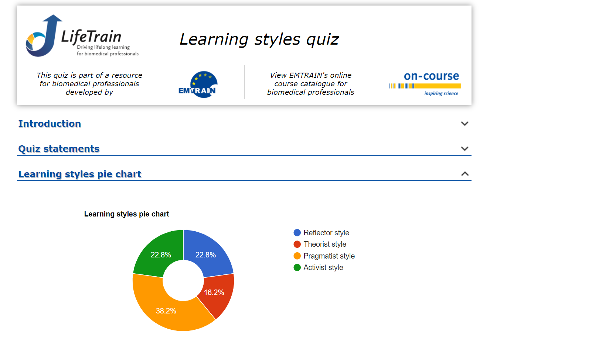

Myers-Briggs test

Although they may seem quiet or unassuming, Mediators (INFPs) have vibrant,
passionate inner lives. Creative and imaginative,
they happily lose themselves in daydreams,
inventing all sorts of stories and conversations in their minds.
These personalities are known for their sensitivity –
Mediators can have profound emotional responses
to music, art, nature, and the people around them.
Learning Style Test

My Scores for Learning Style:
- Auditory: 35%
- Visual: 20%
- Tactile: 45%
Iam a Tactile learner.
Tactile learner, learn by touching and doing, understand and remember
things through physical movement.
Tactile learner, a "hands-on" learner who prefer to touch, move, build or draw
what they learn and tend to learn better when some type of physical activity is involved.
Here are some things that tactile learners can do to learn better:
- Participate in activities that involve touching, building, moving, or drawing.
- Do lots of hands-on activities like completing art projects, taking walks, or acting out stories.
- It's OK to chew gum, walk around, or rock in a chair while reading or studying.
- Use flashcards and arrange them in groups to show relationships between ideas.
- Trace words with your finger to learn spelling (finger spelling).
- Take frequent breaks during reading or studying periods (frequent, but not long).
- It's OK to tap a pencil, shake your foot, or hold on to something while learning.
- Use a computer to reinforce learning through the sense of touch.
Leadership Style Test